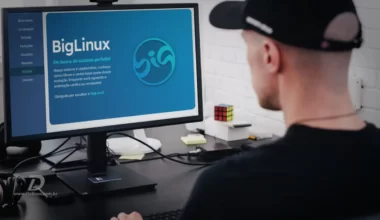

Manjaro 21.3.6 Ruah ganha correção para falha Retbleed
Atualização do Manjaro 21.3.6 Ruah traz correção de falha crítica no kernel e previne conflitos durante a instalação.
Linux Mint 21 “Vanessa” traz desktop focado em estabilidade
O Linux Mint 21 chegou e com ele temos diversas novidades que você provavelmente não irá ver, apenas sentir a medida que usa o sistema.
Linus lança versões estáveis e anuncia o Kernel Linux 6.0
Saiba as novidades da versão 6.0 Release Candidate 1 (v6.0-rc1) do Kernel do Linux, como é a estrutura e forma de versionamento.

Guia de instalação do BigLinux
Uma análise da instalação do BigLinux, a distribuição brasileira reúne talento, conhecimento técnico e simplicidade numa distribuição de alto desempenho.
Para que serve e como configurar a $PATH no Linux
A variável $PATH no Linux é uma das mais importantes, pois serve para achar os principais arquivos executáveis.